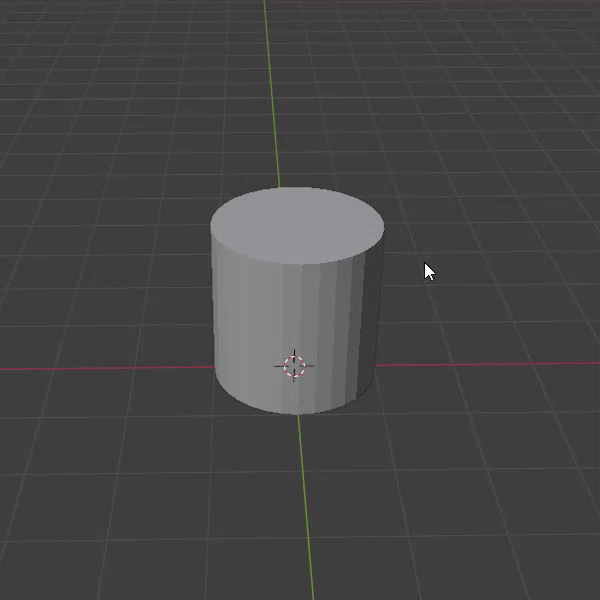
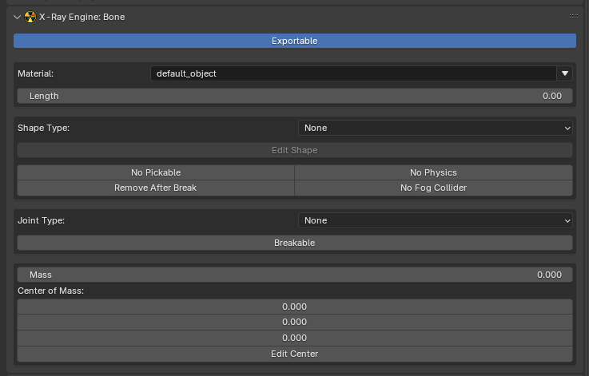

Setup Dynamic Object in Blender
Need to know
- How to work in Blender
- How to work with Blender X-Ray Addon
- Familiarize yourself with the limitations and capabilities of the format *.object (because you may export to it more often than to *.ogf) to avoid errors
- Familiarize yourself with Dynamic Object model type
About
If you want your model to interact with the world and be subject to game physics, Dynamic Objects are just right for the task.
Start
You must have a model downloaded or created by you.
You must have one UV map per mesh.
For my example, I’ll have a model with this UV map.
Сreate an armature (Shift + A > Armature).
When you create an armature, you may not see the created bone as it is rendered behind the object. To see the bone, go to Object Data Properties and in
and in Viewport Display -> click the In Front checkbox.
It is important to remember that in X-Ray, the bones act as a place to anchor the collision shape.
Go to Edit Mode and name the bone as you wish.

Binding
Next, we need to bind our model to the bone we created.
With the Shift key held down, select the model and then the armature.
Press CTRL + P -> With Automatic Weights.

In Blender, there are several choices of binding methods. In this case (where there is a single bone), the method via With Automatic Weights is appropriate. For cases where there are more bones, you will most likely need manual binding via Weight Paint or other methods.
Bone
Select the bone and go to the Bone Properties tab.
We see the X-Ray Engine: Bone section.

The desired field is Shape Type (where you choose the type of shape (for collision)).
From the whole list, our object is more suitable for the Cylinder type. Let’s choose it.
Next, click the Edit Shape button to check and edit the Shape itself.
To see Bone Shapes, go to Object Data Properties . In X-Ray Engine: Armature ->
. In X-Ray Engine: Armature -> Display Bone Shapes.
My model fits quite nicely into the Bone Shape.

Next, choose Rigid in Joint Type.
Surface
Navigate to Material Properties .
.
In X-Ray Engine: Material you need to choose:
Engine
Choose Engine Shader for Dynamic Object
Compiler
Material
Choose Game Material for Dynamic Object
Since the object is dynamic, you need to choose the right Engine Shader and Game Material for Dynamic Objects!
Finish
Go to Object Properties .
.
In X-Ray Engine: Object select Dynamic or Progressive Dynamic in the Type list.
This completes the setup of the Dynamic Object. You can safely export it in the model format you need.